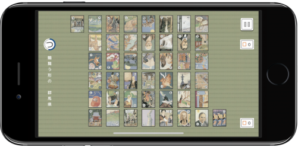
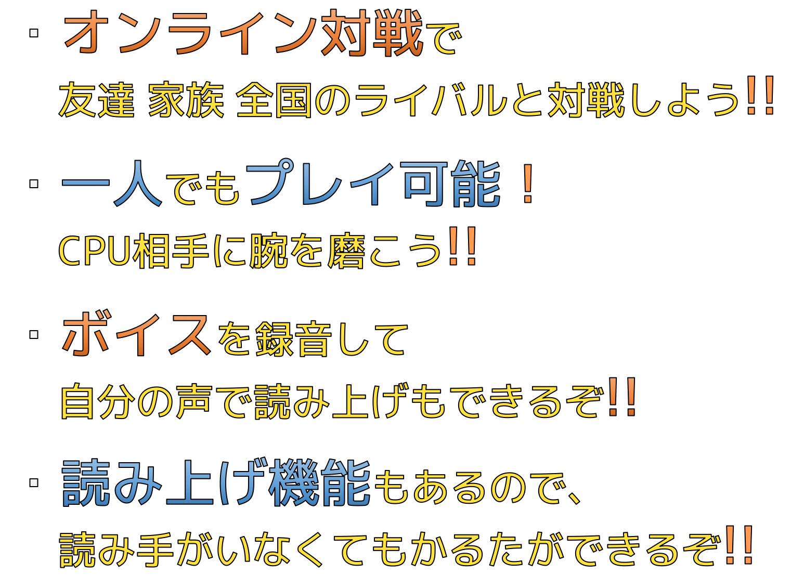

| 試合の準備 | 全44枚の札を自分と相手に22枚ずつ配ります。 |
|---|---|
| 並び替え | 制限時間内に自分に配られた22枚の札を好きなように並び替えることができます。 ドラッグ＆ドロップすると入れ替わります。
|
| 覚える時間 | 自分と相手の札の位置を覚えます。
|
| 競技開始 | 始まりの合図として「鶴舞う形の群馬県」が2回読まれます。 その後ランダムに「あ」〜「わ」までの札が「本読み」「空読み」の順で2回ずつ読まれていきます。 読まれた札をどちらも取らずに次の札が読まれた場合は、その札はどちらの得点にもならず審判預かりとなります。 札が最後の2枚になると真ん中に並び替えが行われます。 並び替えられた後、1つ前の札の「空読み」をしてから最後の2枚のどちらかの「本読み」をします。 この札を取った人が残りの1枚ももらえます。
|
| 結果発表 | 場からすべての札がなくなったら結果発表になります。 持ってる札が多い方が勝利となります。 得点が同じでどちらかが「つ」を持っている場合は「つ」を持っている方が勝利。 得点が同じでどちらも「つ」を持ってない場合は引き分けとなります。 |
| お手つき | お手つきをした場合、相手に札を1枚渡します。 1枚も札を持ってない時は何も起こりません。 持っている札が「つ」しかないときは「つ」の札を渡します。 「つ」以外の札があればそれから先に自動で渡します。 お手つきは本読みされてからその札が取られるまで有効です。 読まれた札と同じ陣の他の札を触るとお手つきとなります。 |